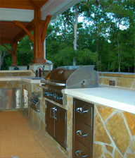

Food
Essential Element One
Food is the primary element in outdoor entertainment.
Fire
Essential Element Two
A fireplace allows you to utilize your space year round.
Water
Essential Element Three
You mean you live in Houston and you don't want a pool?.
Services List
- Patio Covers
- Pergolas
- Outdoor Kitchens
- Fireplaces
- Swimming Pool Design
- Landscape Design
- Swimming Pool Construction Consulting
- Project Management
Prior Planning Prevents Poor Performance
Blue Frog is the only source in the Houston market to transform your outdoor space from ordinary to extraordinary. We do this on several different levels. First and foremost we are a design firm. A good design that keeps with sound architectural principles will enhance your home and add value to your house. We have a background in architecture and have been designing outdoor living spaces for over ten years. Along the way, we've won numerous awards.
Second, we are a construction company. We build Patio Covers, Outdoor Kitchens, and Fireplaces for people like yourself everyday. The difference is, our background in the swimming pool indrustry allows us to integrate with your existing pool seamlessly, or design and build with a future pool in mind.
Third, we are a consulting and management company. We have trained personel in house to oversee even the most complicated projects. Whether your looking to have a simple kitchen built or want someone to manage your complete outdoor experience, Blue Frog is the right choice.